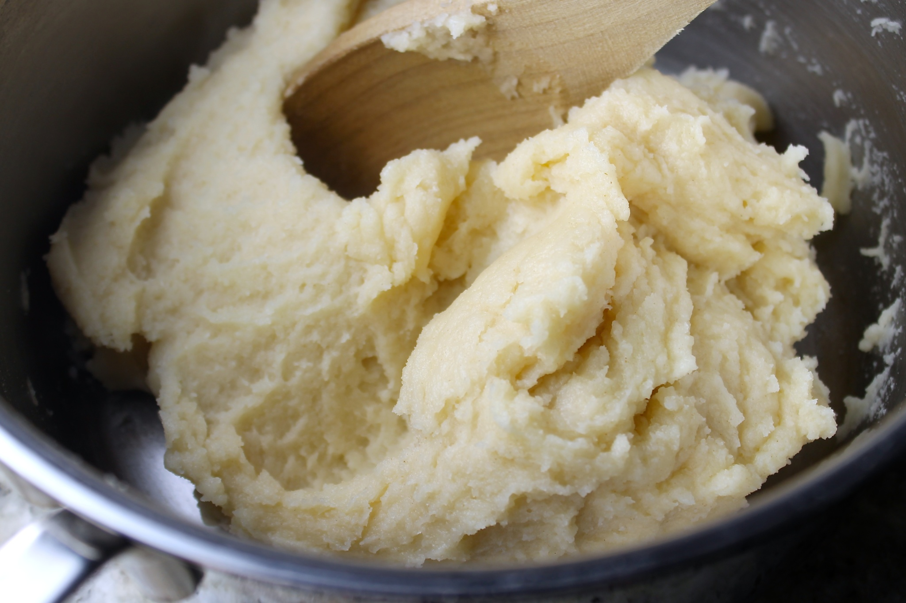
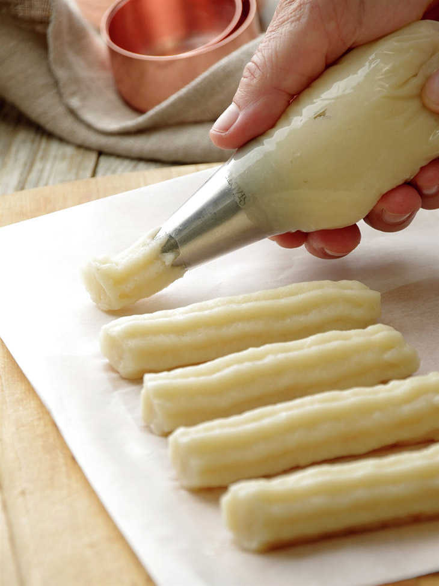
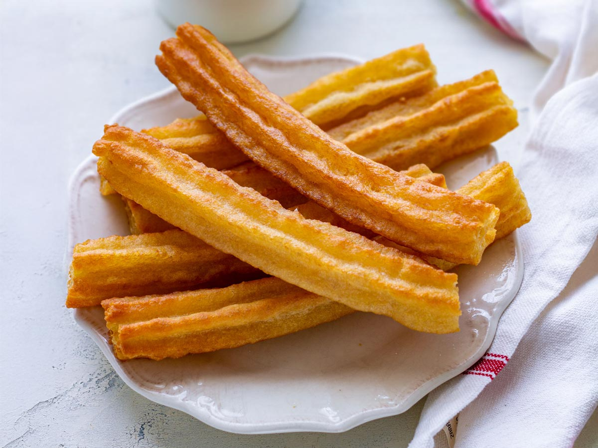

Proceso de Elaboración
Desde la selección de ingredientes hasta el empaque, cuidamos cada paso para garantizar calidad y sabor.

Preparación de masa
Mezclamos ingredientes frescos y controlamos temperatura y consistencia para una masa perfecta.

Moldeado y fritura
Usamos aceite filtrado y controles de temperatura para un dorado homogéneo y crujiente.

Relleno y emplatado
Rellenamos y servimos al cliente o empacamos con higiene para entregas y ventas en tienda.